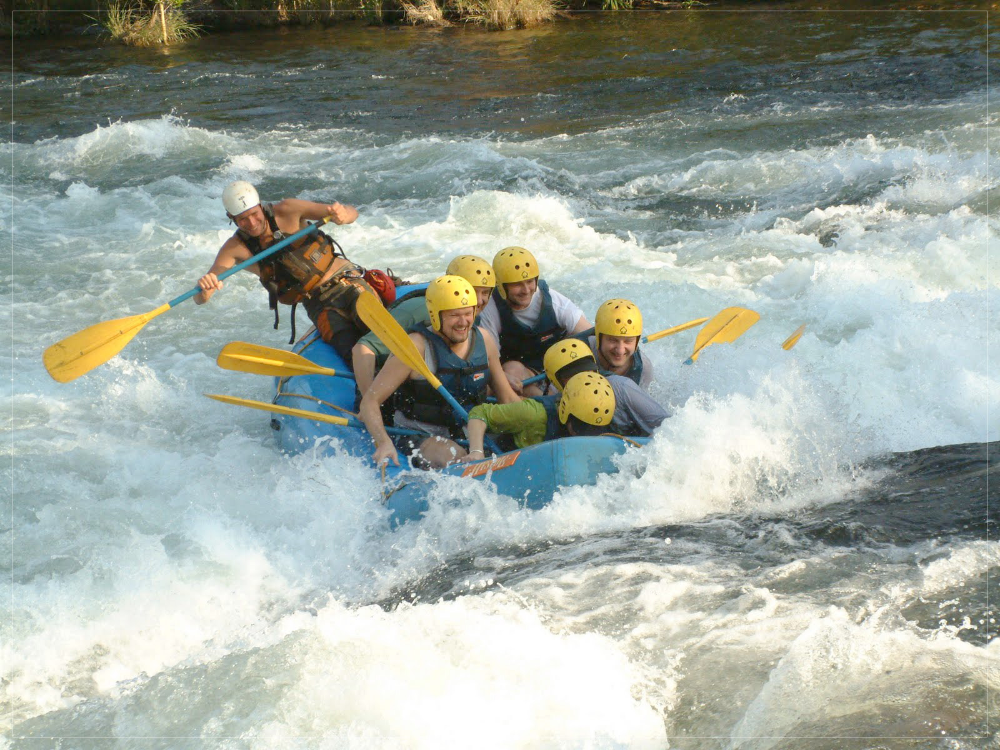
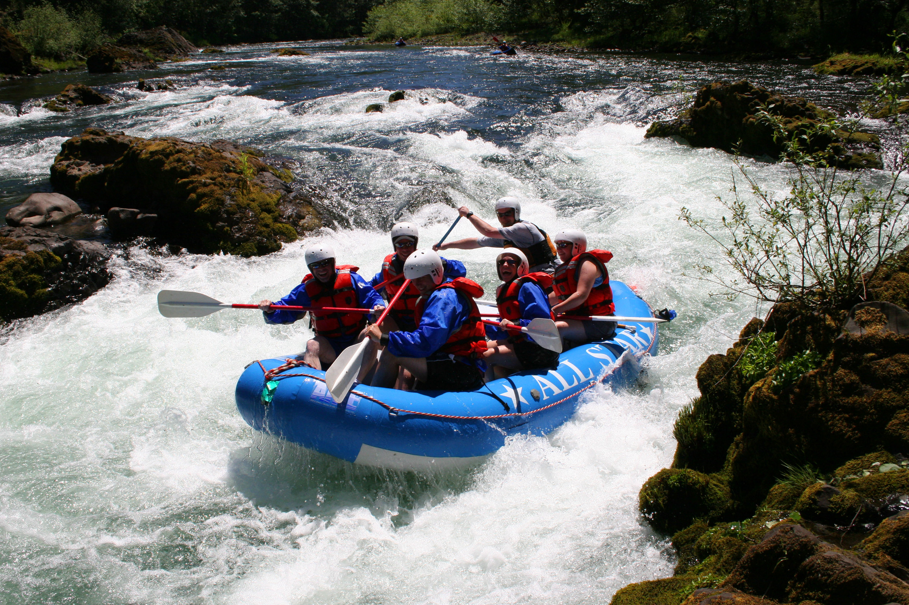
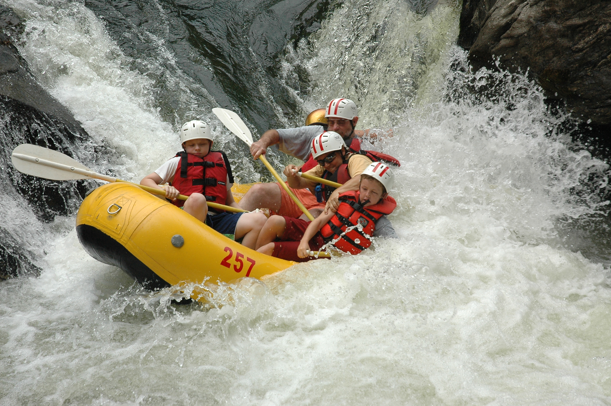
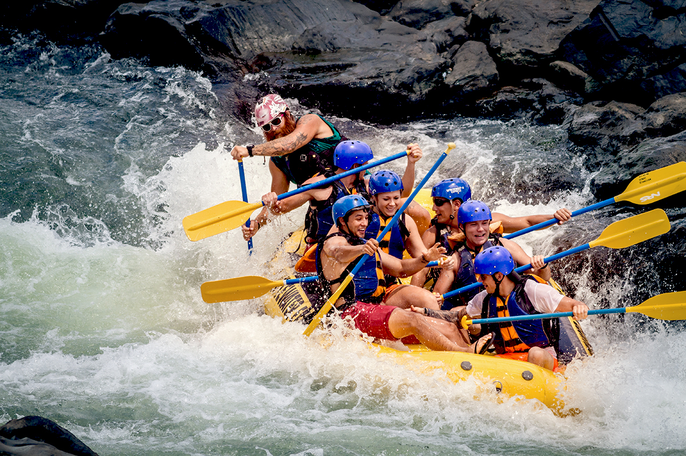
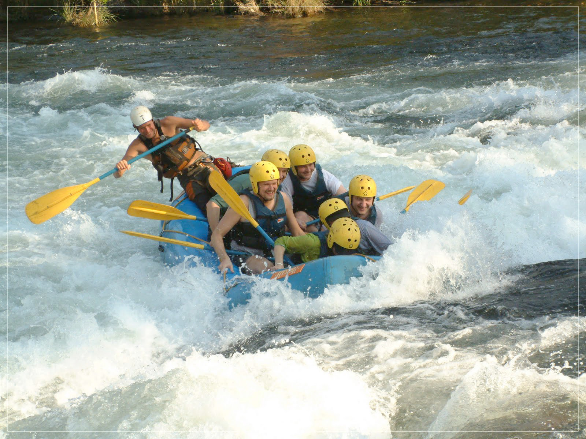
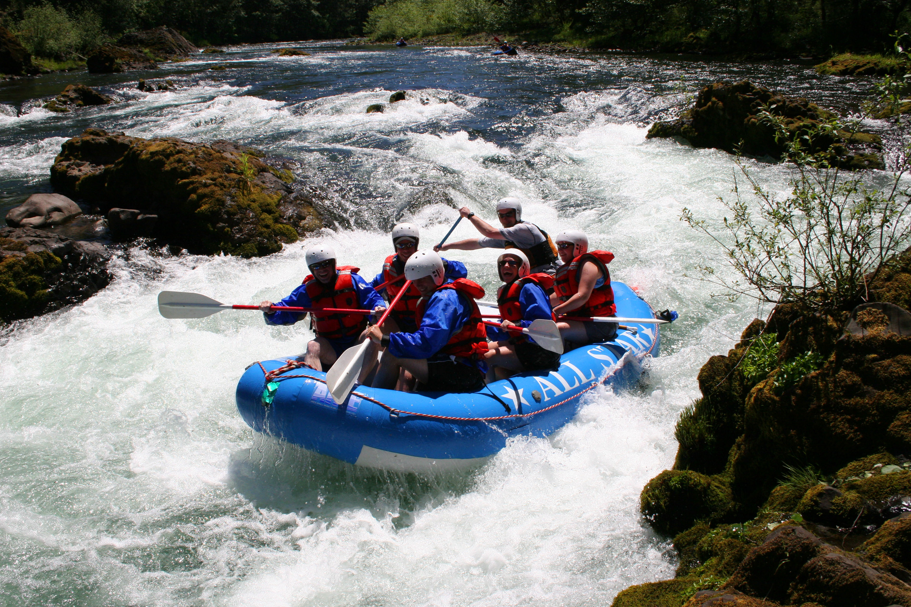
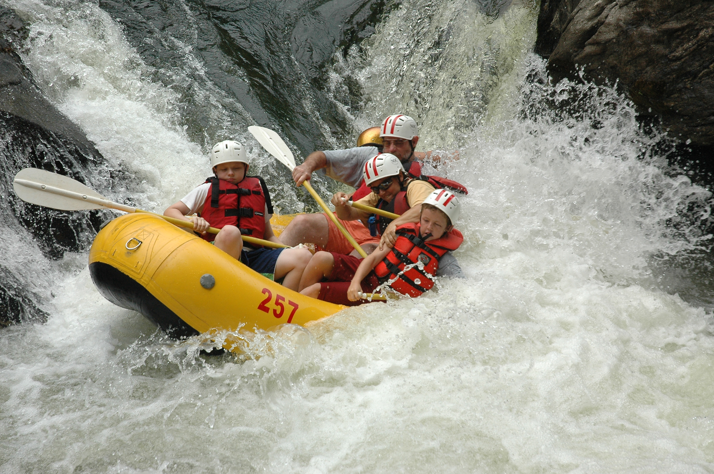
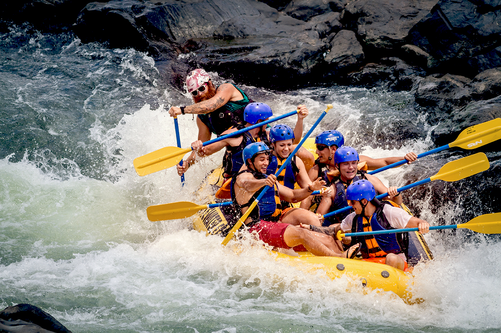

PURPOSE
To provide thrilling and unforgettable rafting experiences that connect people with nature and
foster a sense of adventure.
MISSION
To be the leading provider of rafting adventures in the region by offering a wide range of trips,
exceptional service, and experienced guides who prioritize safety and fun.
At Johnson Brothers Rafting, we believe that everyone should have the opportunity to experience the thrill
of rafting. We are committed to providing safe, memorable and engaging trips that foster a sense of
community and connection with nature. We believe in responsible stewardship of our wild rivers, and
strive to leave the environment better than we found it.
MOTTO
"Experience the thrill, feel the rush, and make memories that last a lifetime."
 Salmon River
Colorado River
Snake River
Arkansas River River
Rogue River
Salmon River
Colorado River
Snake River
Arkansas River River
Rogue River